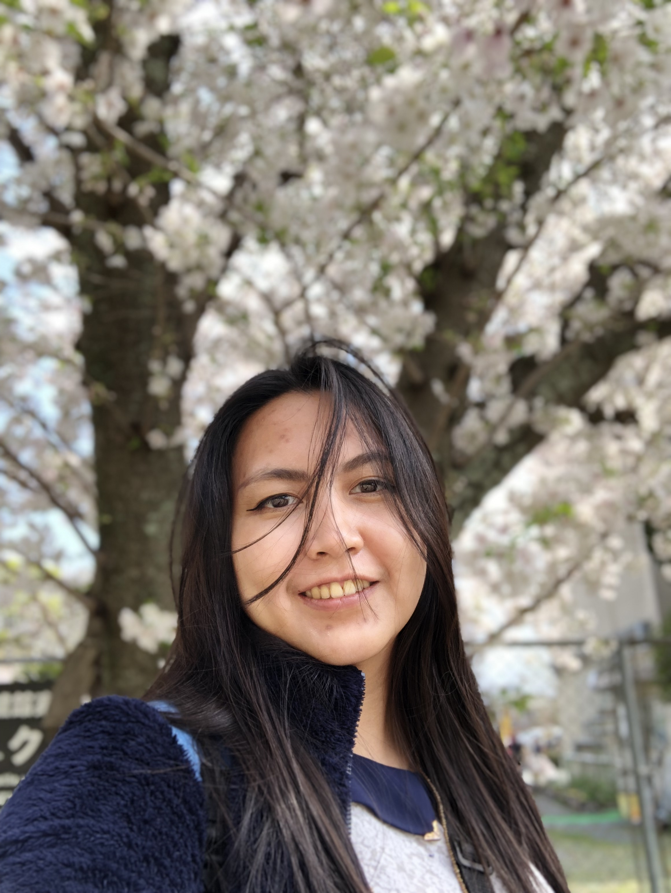
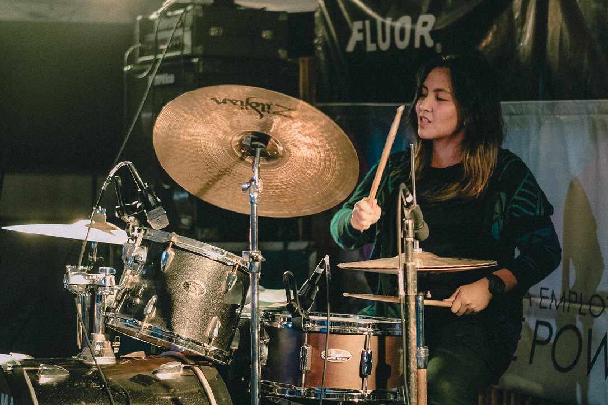
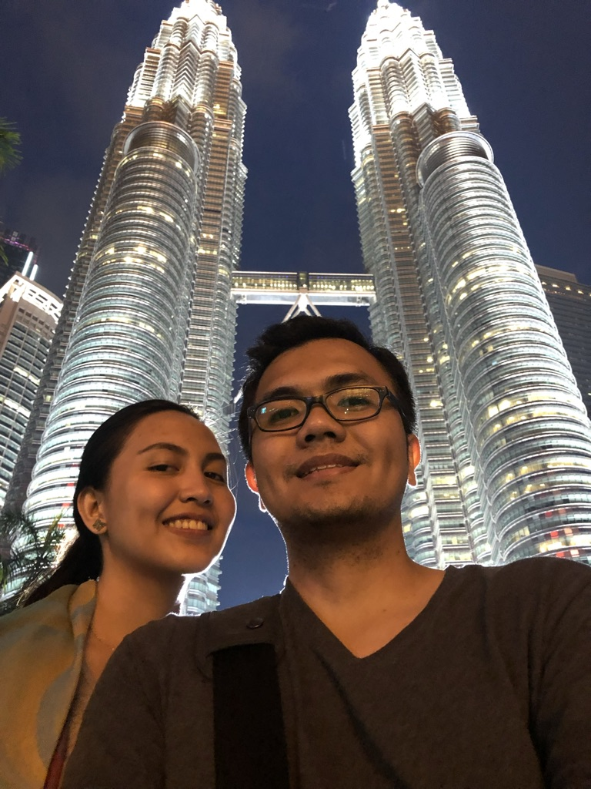
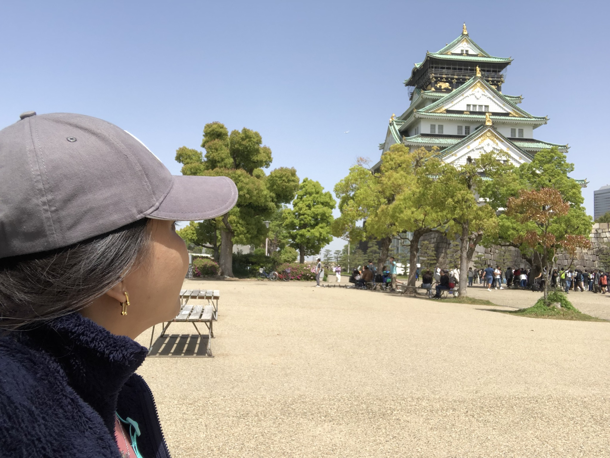
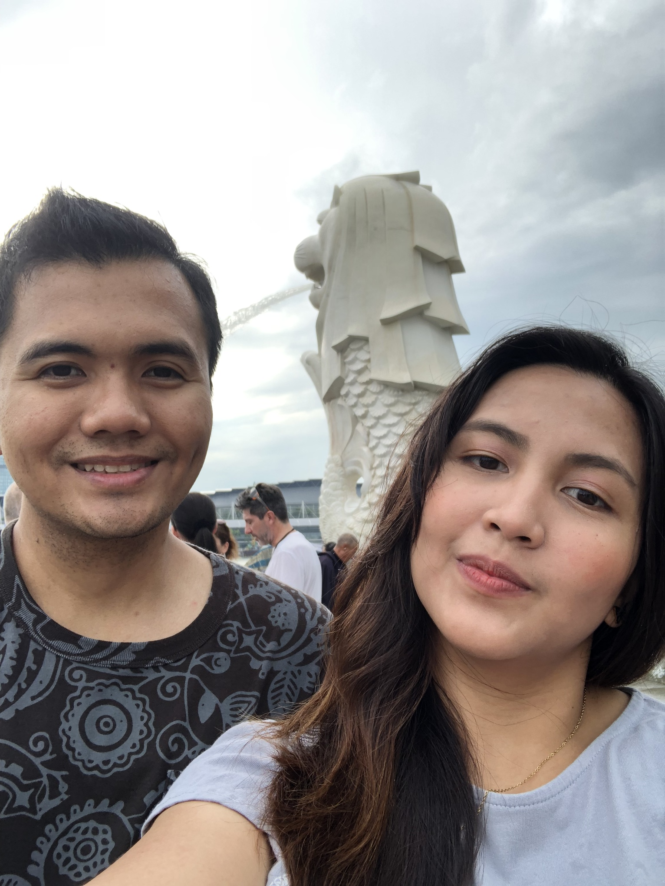
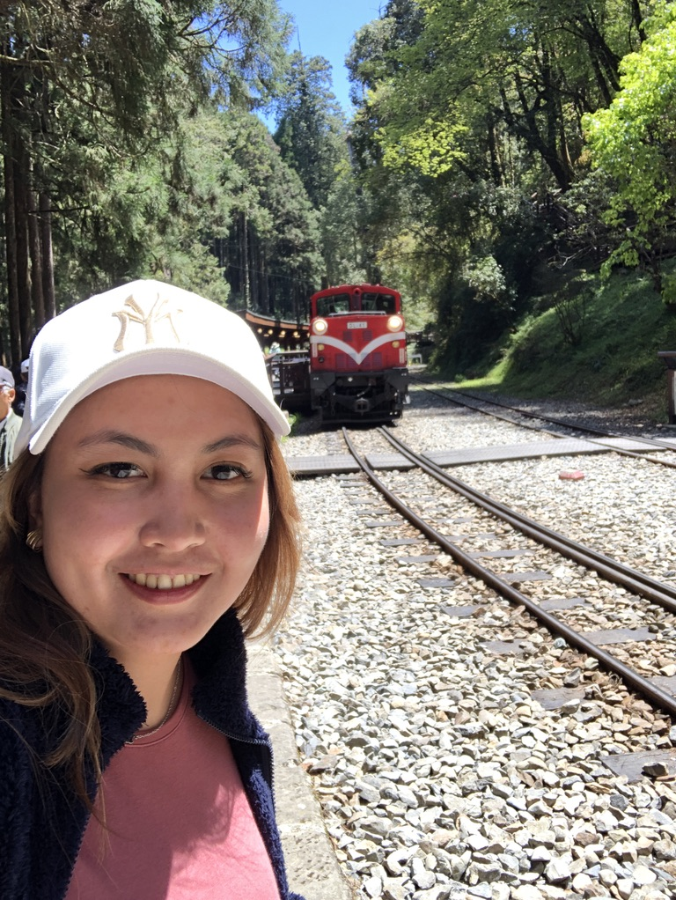
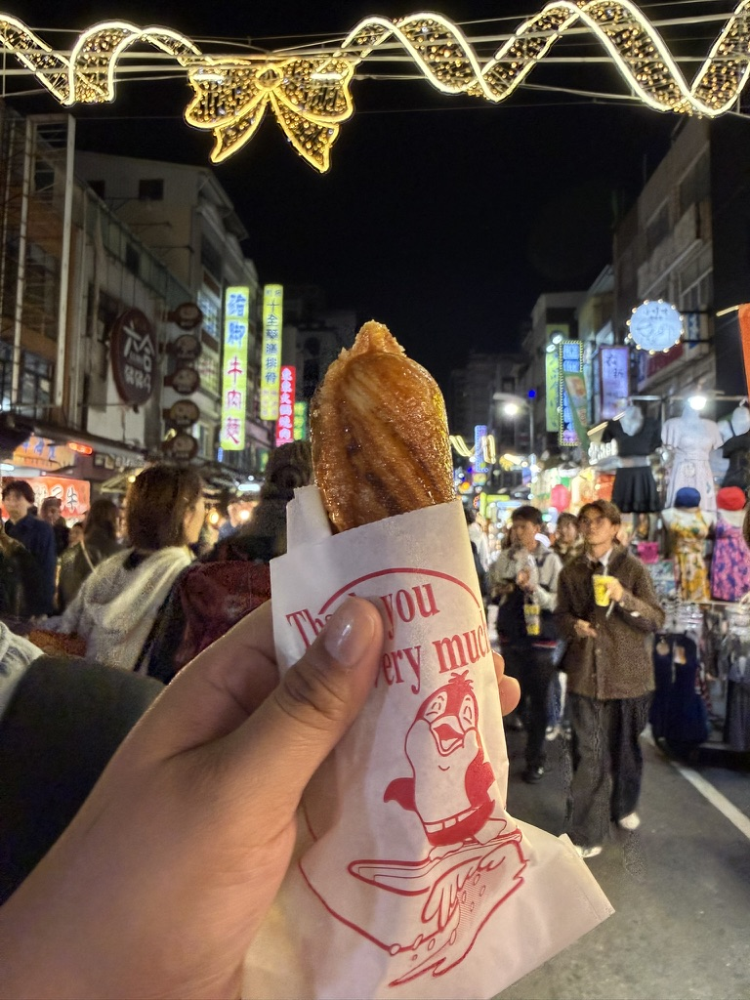
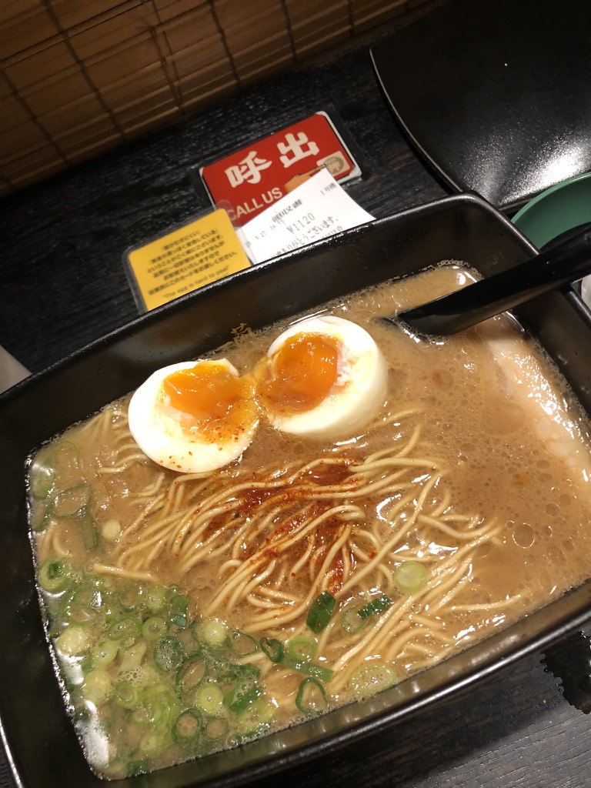
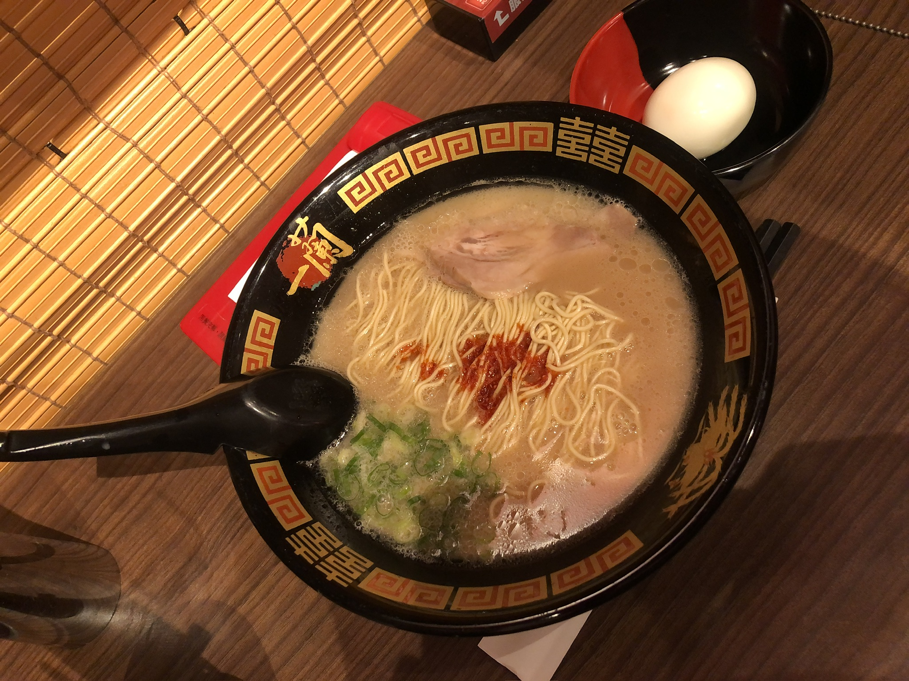

Welcome to My Portfolio
Mechanical Engineer | Student | Software Developer Wannabe | Creative Thinker
This is my personal website showcasing me.
Click on a link to visit a section:
About Me
Hello! I'm Jether Mae Tolentino-Latag (I still use my maiden name in the class Jether Mae P. Tolentino) a Mechanical Engineer by degree trying my way to transition into the tech industry.
I am currently pursuing my studies in Computer Science.
I believe in continuous learning and always strive to improve my skills. This portfolio presents some information about me, my hobies and my contact details.
I enjoy learning new technologies and solving problems through programming.
Outside of my studies, I love traveling, exploring different kinds of food, and listening to music. These interests keep me curious. I'm always excited to discover something new.
I'm excited about the future of my career as I venture into new waters like software development and eager to contribute to innovative projects that make a positive impact on people's lives.

Hobbies & Interests
Drums
I have been playing the drums for more than 12 years and currently serve as a drummer in our church.
Playing music has taught me discipline, teamwork, and consistency, especially when serving in church.
Drumming Gallery

Travel
I also enjoy traveling and experiencing different cultures. So far, I have visited several Asian countries such as Japan, South Korea, Hong Kong, Macau, Taiwan, Singapore, and Malaysia.
Traveling allows me to learn about new places, food, and traditions. In the future, I hope to visit countries outside Asia and continue exploring more parts of the world.
Travel Gallery




Foodie
I really enjoy is trying new restaurants, especially ramen shops.
I love exploring different ramen places around the area and tasting different styles of ramen. Some of my favorite ramen restaurants in the Philippines are Mensakaba Geisha in BF, Ramen Kabuki in Quezon City, and of course the well-known Yushoken and Mendokoro.
Food Gallery



Pets
I have 2 pomeranians named Rocket and Bisket. Rocket is a male pomeranian with black and Brindle fur color and Bisket is a tiny tiny pomeranian with sable color
I also have 2 cats named garfield and orea. They are Puspins Garfield is an "orenj" cat as the social media calls orange cats, and Oreo is a tabby "Tilapia" gray cat :D
Food Gallery


Contact Info
Get in Touch
Email: jptolentino6@up.edu.ph
Location: Manila, Philippines
Social Media
Want to know more about me?
Random Fun Fact
Click the button to discover something fun about me!